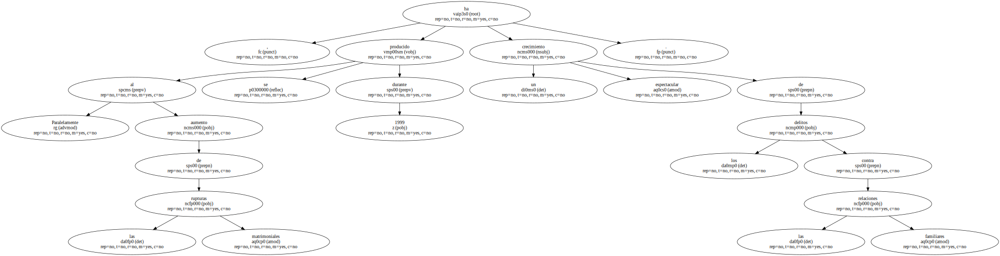
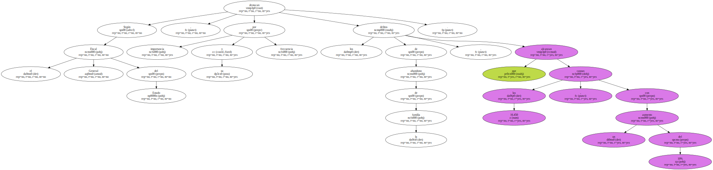
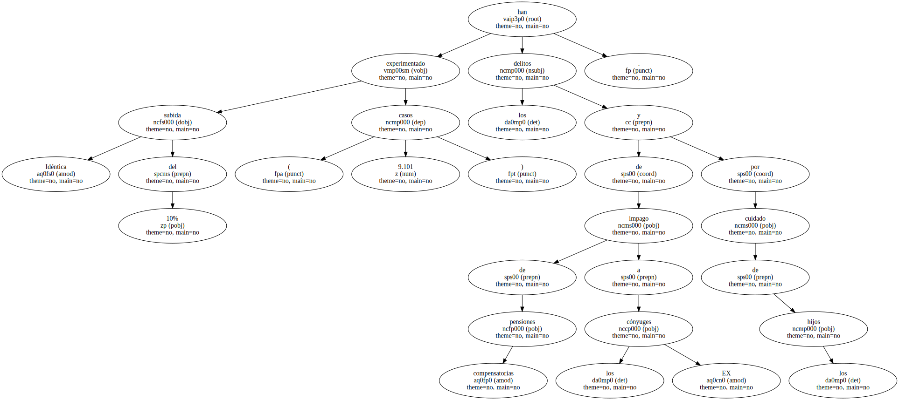
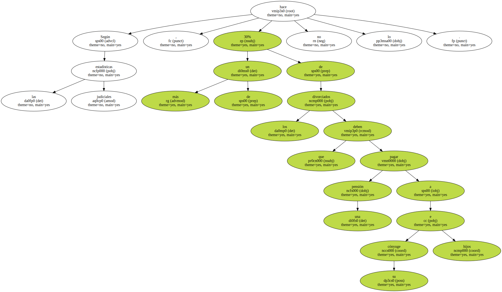
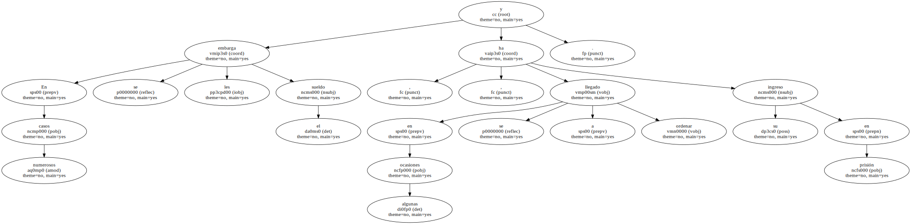
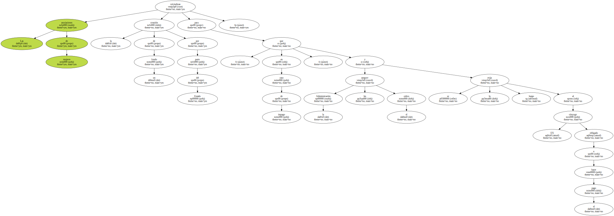
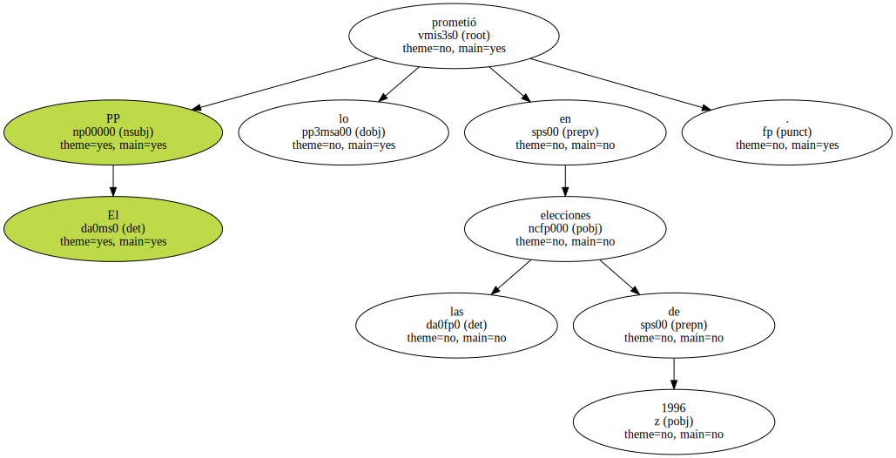
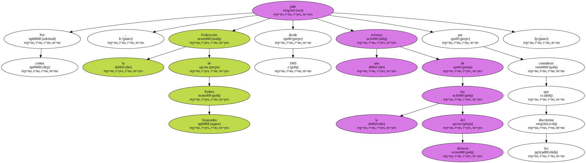
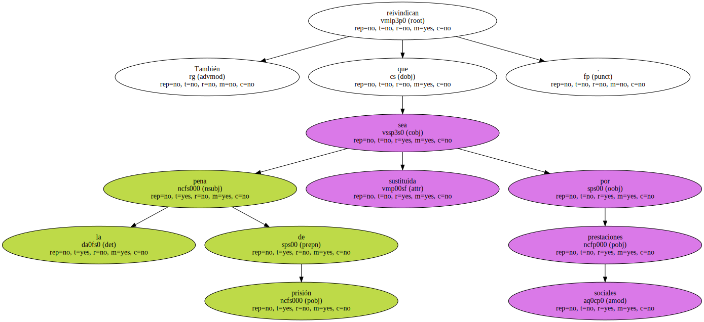

Paralelamente al aumento de las rupturas matrimoniales , se ha producido durante 1999 un espectacular crecimiento de los delitos contra las relaciones familiares.
Según el Fiscal General del Estado , destacan por su importancia y frecuencia los delitos de abandono de la familia , que alcanzan las 16.450 causas , con un aumento del 10%.
Idéntica subida del 10% han experimentado los delitos de impago de pensiones compensatorias a los EX cónyuges y por cuidado de los hijos ( 9.101 casos ).
Según las estadísticas judiciales , más de un 30% de los divorciados que deben pagar una pensión a su cónyuge e hijos no lo hace.
En numerosos casos se les embarga el sueldo y , en algunas ocasiones , se ha llegado a ordenar su ingreso en prisión.
Las asociaciones de mujeres reivindican la creación de un fondo por parte del Estado para que , en caso de impago , la Administración les asegure el cobro y se lo exija luego al EX cónyuge obligado a hacer el pago.
El PP lo prometió en las elecciones de 1996.
Por contra , la Federación de Padres Separados pide desde 1995 una reforma de la ley del divorcio por considerar que les discrimina.
Piden la liquidación de los bienes gananciales en el mismo momento de la separación y la desaparición de la pensión compensatoria o mantenerla un máximo de dos años.

También reivindican que la pena de prisión sea sustituida por prestaciones sociales.
